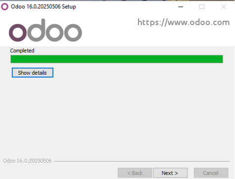

Cómo instalar Odoo
Sigue estos pasos para instalar Odoo en tu sistema:
1. Descargar el ejecutable desde la página oficial tras registrarse
2. Ejecutar el instalador y seguir los pasos de instalación
3. Aceptamos permisos de administrador
4. Elegimos el idioma, en nuestro caso será inglés porque solo da opción a inglés o francés
5. Aquí nos da la bienvenida y daremos a next
6. Aceptamos las condiciones de uso
7. Dejaremos las opciones marcadas que vienen predeterminadas
8. Ponemos un Username y nos guardamos bien la contraseña por si hiciera falta más adelante
9. Ponemos la ruta en la que queremos instalarlo
10. Dejamos que se instale
11. Cuando esté completado daremos en next
12. Marcaremos la casilla de start y daremos en finish
13. Nos guardaremos lo mejor posible el Master Password ya que lo necesitaremos más adelante y pondremos de nombre db_Nombre. Rellenaremos el resto de campos
14. Usaremos la contraseña puesta anteriormente en Password, no la Master
15. Una vez hecho todo ya veremos la página web